When you cross the Triborough Bridge from Queens to Manhattan, take a look out your window as you pass over Randall’s Island and you may spot a short, wide building bristling with plant life.
Succulents, shrubs, and grasses are splashed across its roof and up its walls in meticulously planned abundance. Water barrels and beehives are scattered in a dozen corners, and hundreds of solar panels encircle everything in rows of shining black. This is the Five Borough Complex, owned by the Department of Parks & Recreation, and its green roof is the most diverse in America.
The Complex has been an experimental laboratory for green infrastructure for over a decade. Researchers there have road-tested around 45 types of green roof, from shallow modular trays to wildflower meadows to sophisticated hydroponic towers, with the goal of finding the perfect fit for every building. Alongside other New York City groups like the Green Roof Researchers Alliance and Columbia University’s Urban Design Lab, they have helped document the environmental benefits of green roofs and have amassed expertise that supported the rollout of several flagship projects.
“The Five Borough Complex is just such a great example for people,” said Dustin Partridge, Managing Director of the Green Roof Researchers Alliance. “It can be inspirational, because they have so many different types of roofs up there, so many trial plots and examples.”
But despite all the research conducted at the Complex and across the city, green roofs remain a rarity, with fewer than one in every thousand buildings using one. Experts contend that policy incentives have failed to spur uptake, especially in poorer areas where they could help mitigate some of the worst impacts of climate change. In 2019, sustainable roof laws in the city were revamped, leading some to hope that a green roof boom is on the horizon – but questions remain over whether the new laws are enough.
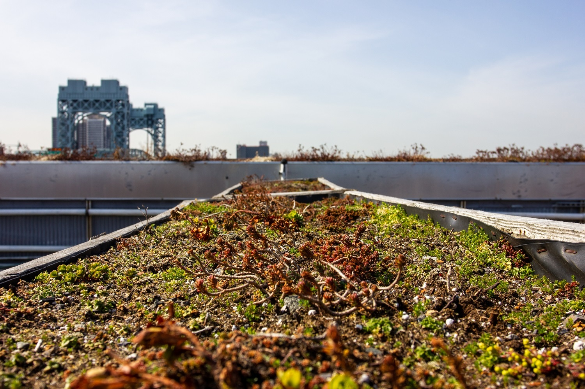The Five Borough Complex sits next to the Triborough Bridge on Randall's Island.
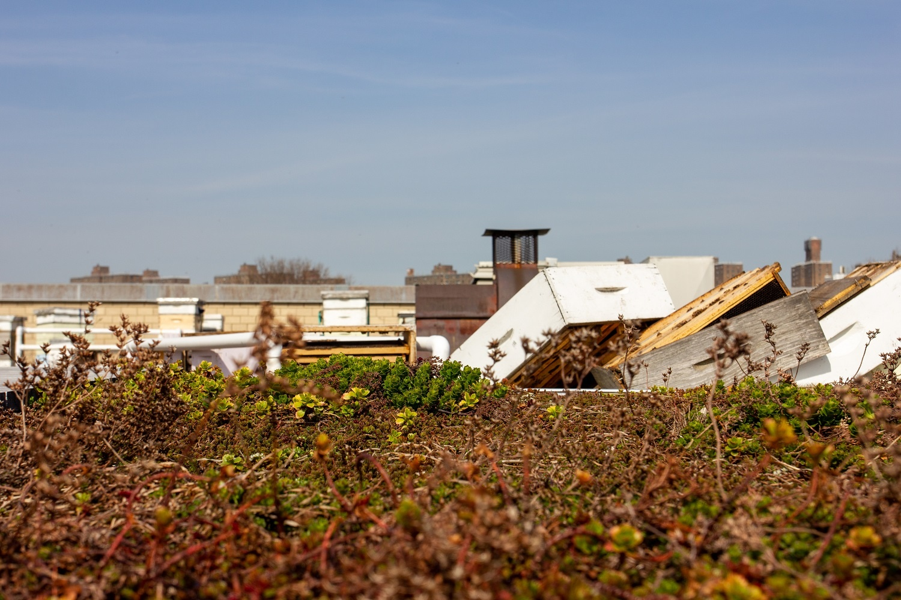The roof is home to 45 different green roof systems living side-by-side.
Green roofs come in all shapes and sizes, but they tend to follow the same general principle: a roof is covered in a thin layer of soil and living plants. This simple idea can yield a smorgasbord of environmental benefits. The roofs take CO2 out of the atmosphere, making them a viable carbon store if deployed at scale. They can trap harmful pollutants and can provide habitat for wildlife.
They can even mitigate some of the damaging effects of climate change. By sucking up excess water during storms, they can reduce flood damage – vitally important in New York City, where 400,000 people already live within a flood zone that is set to grow as sea levels rise. They are also good at regulating temperature. According to the Environmental Protection Agency, temperatures on such roofs can be 30 to 40 degrees Fahrenheit lower than on regular roofs, and they can lower city-wide average temperatures by 5 degrees Fahrenheit.
“I don’t think there is any cosmic mystery around green roofs,” said Max Lerner, Sustainability Project Development Coordinator at the Complex. “We know that green roofs work, that they are a good option to improve the urban environment. It’s just that there is an airgap in a lot of people’s understanding.”
One of the main goals of the Complex is to fill in that gap.
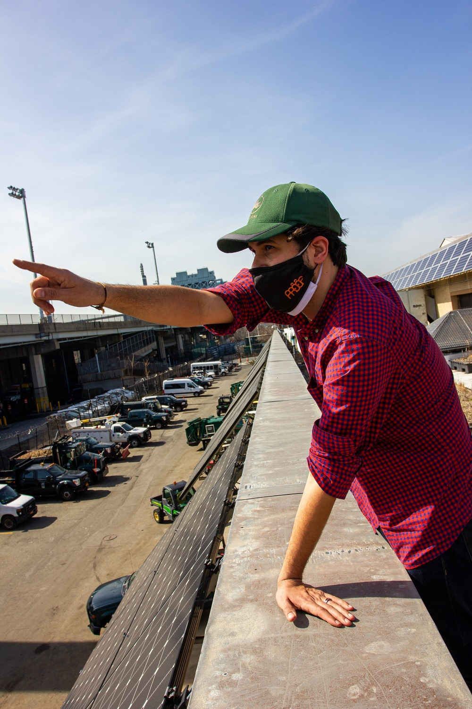Max Lerner, Emerging Technologies for NYC Parks.
“Generally speaking, there is a green roof for every building,” said Lerner, who has been working at the site since 2013. Lots of buildings tend to be written off as unsuitable, he said, because they were not designed with sustainable roofs in mind. But the designs tested by his team aim to make tricky retrofits easier.
Lerner likens his design strategy to “4D chess,” with green roofs sculpted to fit the idiosyncrasies of each building. For instance, when his team helped plan the Javits Center green roof – which ended up being the second-largest in North America – they had to use lightweight materials to avoid damaging the roof. Due to its vast size, the designers also wanted something very low maintenance. A thin layer of sedum (rubbery perennials that can thrive without much water) turned out to fulfil both requirements nicely.
Now, the Javits Center are green roof converts; their current expansion plan includes an elaborate rooftop farm that will provide up to 40,000 pounds of fruit and vegetables every year.
Other buildings might benefit from different designs trialed at the Complex. Buildings with steeply sloped roofs could be suited to wall-mounted planters. Roofs crowded with machinery could install modular trays, slotting them in wherever there is room. And builders are encouraged to take advantage of existing structural features; on the Complex’s roof, for example, several “preposterously heavy” planters containing shrubs and trees are set on top of loadbearing columns.
Lerner’s experiments have revealed ways to maximize the environmental benefits of green roofs as well. For instance, one trial showed the effectiveness of using green roofs in tandem with solar panels. Panels tend to lose efficiency when they get too hot, and planting shade-loving sedum underneath them helped to keep them cool enough to work at maximum capacity.
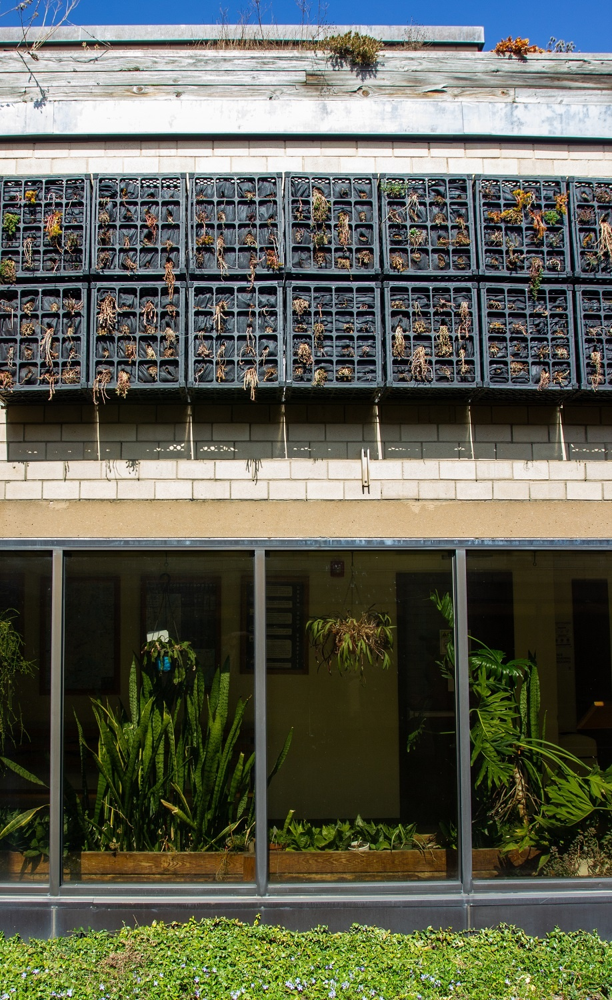Green walls are ideal for buildings without much usable roof space.
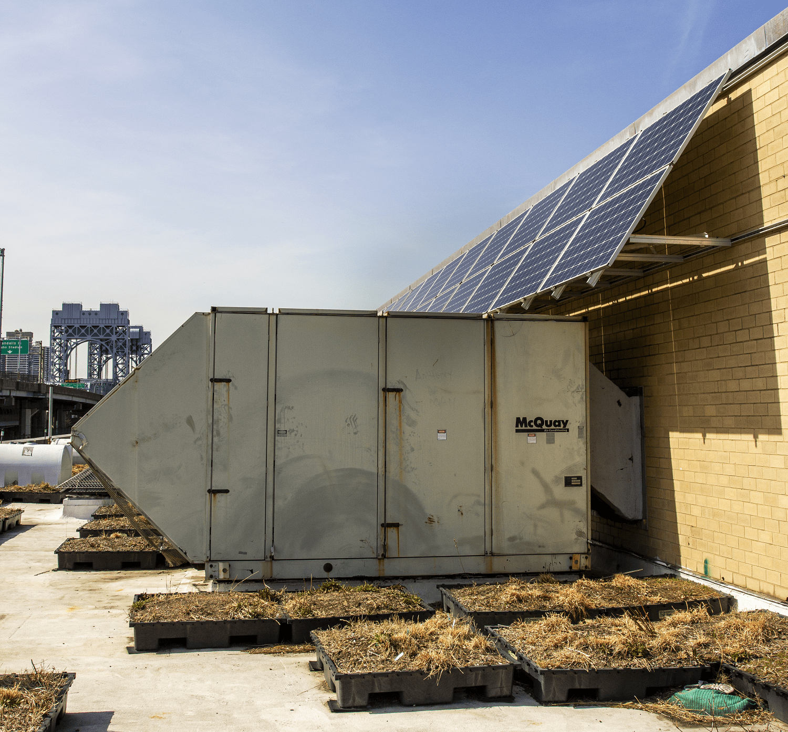Modular green roof trays can be slotted around heavy machinery.
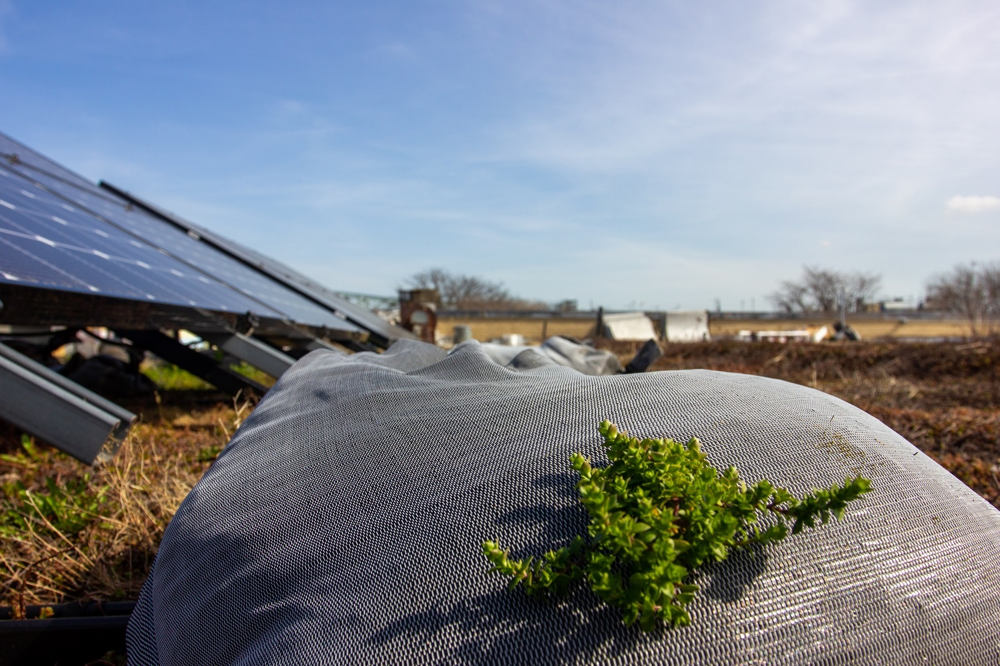Bags of soil and succulents are used to weigh down solar panels, eliminating the need for carbon-intense breezeblocks.
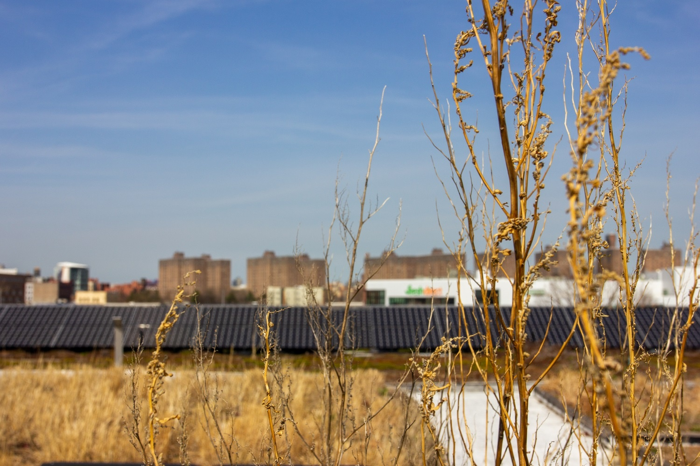Green roofs and solar panels offer benefits that complement one another.
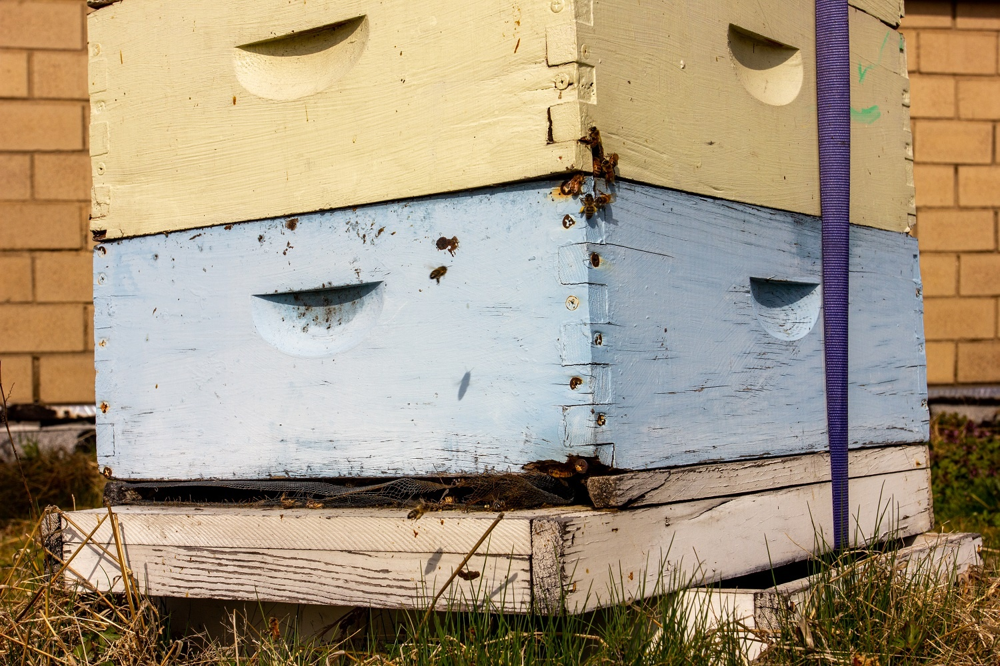The green roof team has experimented with keeping bees at the Complex to improve pollination.
Although Lerner’s team and various academic groups have done a great deal of applied research, their insights are struggling to take root in New York. The Nature Conservancy found that green roofs are still uncommon, with only about 730 of the city’s one million buildings having a green roof as of 2016.
Danielle Spiegel-Feld, an expert in urban environmental law at the Guarini Center, suggests that this dearth is not down to a lack of understanding of green roofs but because of “woefully ineffective” policy incentives. The city passed a bill in 2008 that gave a $4.50 per square foot tax abatement to anyone building a green roof, but in a 2018 report, Spiegel-Feld found that the abatement had been claimed only seven times over the course of eight years.
“A $5 payment is just not that meaningful,” she said. “It’s just not enough money to pay for the administrative costs of applying for it.”
Green roofing in New York City typically costs about $30 per square foot. In her report, Spiegel-Feld says that some of the builders who secured the abatement actually lost money due to the time-consuming application process. She also argues that the incentive was not targeted at areas that needed it; one of the seven abatements given between 2008 and 2016 went to a suburban home in Riverdale that was already surrounded by trees and green space.
In general, placement of green roofs has been far from equitable. Green roofs in New York City have tended to cluster in wealthy lower Manhattan, and New York City tax data reveals that the average value of a private property with a green roof is $85 million. Although government-owned green roofs are spread more evenly throughout the city than private ones, they only make up around 10% of the total, meaning that rich neighborhoods are still the main beneficiaries.
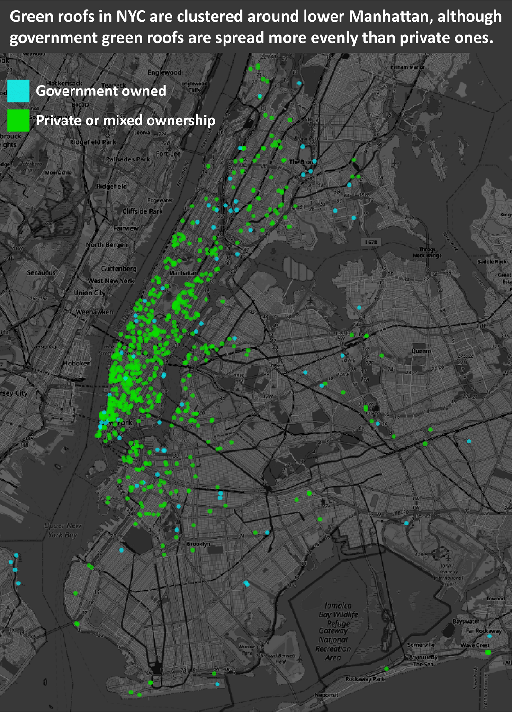Green roofs in New York City are mainly for the rich.
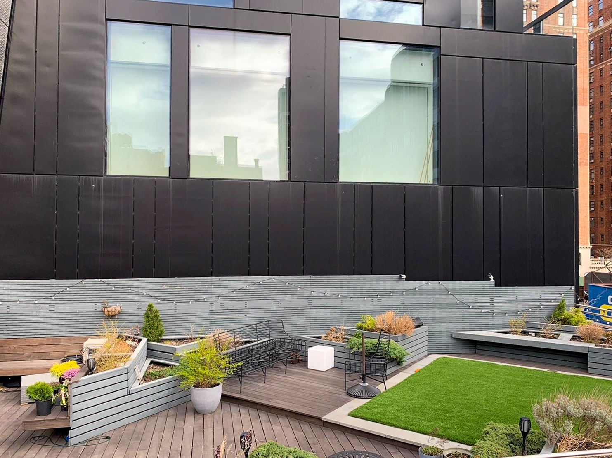Green roofs are concentrated in lower Manhattan.
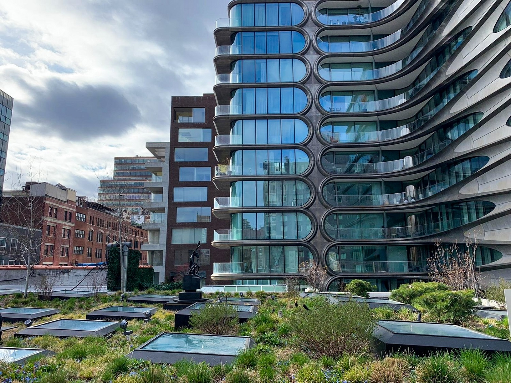Some green roofs are used primarily for beautification.
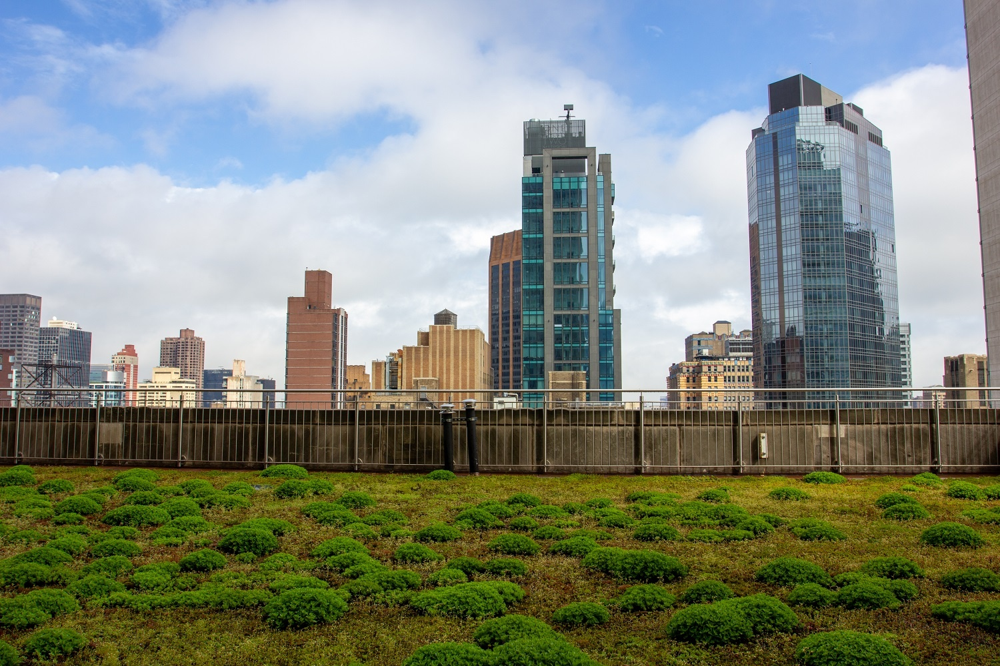The Empire State Building is home to one of lower Manhattan's flagship green roofs.
But analysis from the Nature Conservancy shows that urban heat islands are far more prevalent in poorer areas of the city, such as the Bronx. Many of these areas are also at greater risk of flooding. This suggests that poorer areas would have much more to gain from green roofs.
“From a social perspective, you want green roofs to go into the poorest areas of the city,” said Spiegel-Feld, “because that’s where we have the lowest air conditioned rates, the highest vulnerability to heat, and so forth. But those areas of the city also generally have the least excess capital at their disposal.”
In 2019, the tax abatement was tripled to $15 per square foot and was modified so that it would only be available to vulnerable neighborhoods. The move was hailed as a “significant step forward” by some storm water infrastructure advocacy groups.
Spiegel-Feld agrees that this is a positive step but has reservations. “I’m not hugely optimistic that the outreach is going to be very effective,” she said. It took the city government two years to decide which neighborhoods would be eligible for the abatement – the list was released only a month ago – and the Department of Buildings has still not updated their website with the new information. What is more, abatements require developers to have lots of capital to spend upfront, Spiegel-Feld said, which is not a given in the areas that need green roofs most.
Steven Peck, president of the industry association Green Roofs for Healthy Cities, also has doubts. He is disappointed that the abatement includes a city-wide cap of $1 million, one-tenth of what was advocated for by the Green Roofs Research Alliance when they were consulted on the policy.
“I mean, a million dollars a year?” said Peck. “For a city the size of New York? It is, quite frankly, frighteningly small. You’d be lucky to get three or four green roofs out of that.”
“There is not a single city in North America that would benefit as much as New York City from widespread green roof implementation,” said Peck. “They should be investing tens of millions in public dollars every year and developing their green roof industry aggressively. It will help them adjust for climate change. Just look at the science. It’s not going to be pretty in New York in five, ten, twenty years from now.”
A separate pair of laws passed in 2019 may give green roof advocates more reason to be optimistic. The laws require new buildings to cover their roofs entirely with either green roofing, solar panels, or a mixture of the two. Their potential is unclear, given how built-up New York already is and how development stalled during the pandemic, but similar laws enacted elsewhere have been effective.
In 2009, Toronto was the first major North American city to institute a mandatory green roof law. Since then, according to a 2019 report, the city has installed over five million square feet of green roof and thousands of tons of carbon have been sequestered. Over 200 million liters of storm water are retained every year, and the electricity annually saved could power an electric car for 16 million miles. The report also notes that a third of the energy savings actually came from buildings that did not have green roofs, but instead benefited from their cooling effects simply be being near them.
Some US cities have followed suit. Washington DC, Chicago, and San Francisco have all implemented some form of mandatory green roof laws. The benefits are hard to quantify as they change from place to place – Chicago might have less need for cooling than San Francisco, for instance – but all report some environmental and financial benefits.
Lerner is hopeful that the new laws will spark a wave of green infrastructure as New York bounces back from the pandemic. By requiring green roofs on new builds, he said, local contractors should get more used to installations, and that should bring down prices for old buildings too.
“I think over time there will be this natural progression of people getting more-and-more intensive, interesting, incredibly environmentally high-end systems,” he said.
“I’m really excited to be part of that pivot.”
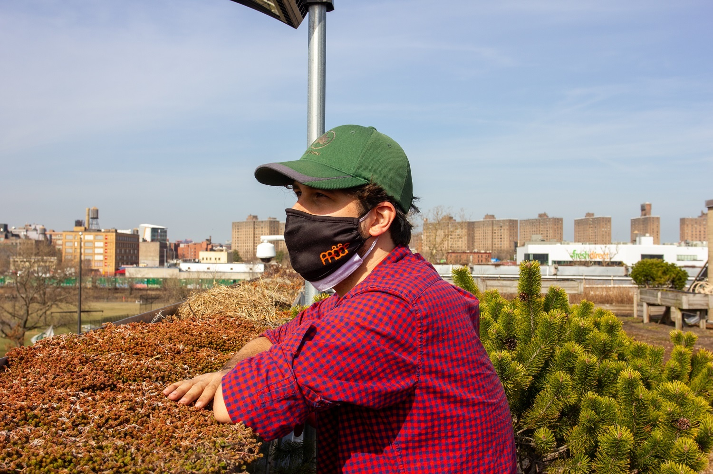